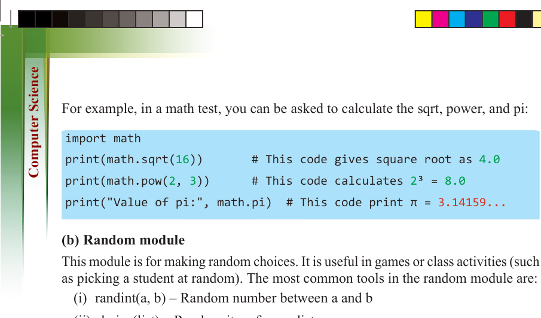
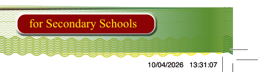
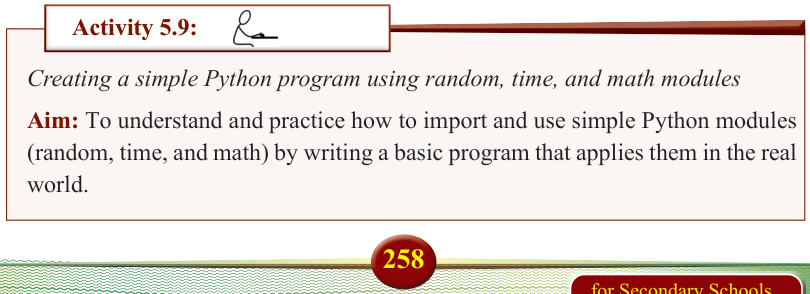
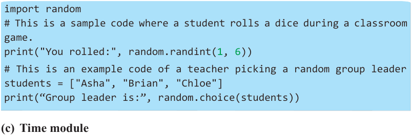
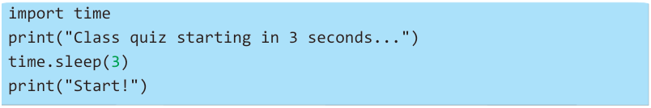

258
for Secondary Schools
For example, in a math test, you can be asked to calculate the sqrt, power, and pi:
import math print(math.sqrt(16)) # This code gives square root as 4.0 print(math.pow(2, 3)) # This code calculates 2³ = 8.0 print("Value of pi:", math.pi) # This code print π = 3.14159...


(b) Random module


This module is for making random choices. It is useful in games or class activities (such


as picking a student at random). The most common tools in the random module are:

(i) randint(a, b) – Random number between a and b


(ii) choice(list) – Random item from a list


Observe the following code:



import random

# This is a sample code where a student rolls a dice during a classroom

game.

print("You rolled:", random.randint(1, 6))


# This is an example code of a teacher picking a random group leader students = ["Asha", "Brian", "Chloe"] print(“Group leader is:”, random.choice(students))
(c) Time module
This module can pause your program, so it is helpful when you want a delay. The
most common tool in the time module is “sleep(seconds)”, which pauses the program.
Observe the following code:

import time print("Class quiz starting in 3 seconds...") time.sleep(3) print("Start!")
Activity 5.9:
Creating a simple Python program using random, time, and math modules
Aim: To understand and practice how to import and use simple Python modules
(random, time, and math) by writing a basic program that applies them in the real world.

ComputerScin